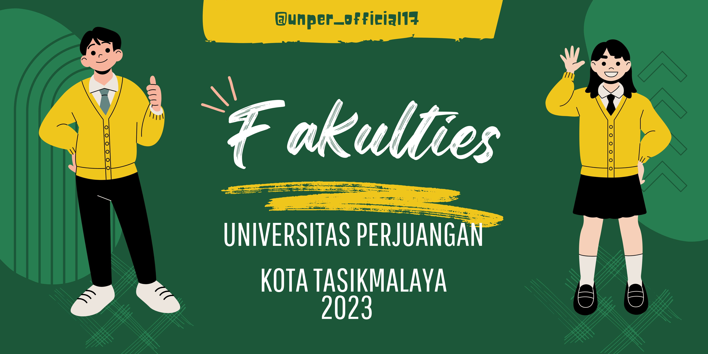

UNPER adalah salah satu universitas akademik terkemuka di kota tasikmalaya yang terus mengejar pencapaian tertinggi dalam hal penemuan, pengembangan dan difusi pengetahuan.. Dengan prestasi yang terus diraihnya UNPER berada di peringkat kampus 3 besar di kota tasikmalaya berdasarkan penilaian masyarakat.
Universitas Perjuangan ini didirikan berdasarkan kesadaran masyarakat untuk menimba ilmu melalui pendidikan tinggi.
Yayasan Universitas Siliwangi pun berharap pendirian Universitas Perjuangan dapat menampung anak-anak muda harapan bangsa untuk menimba ilmu.
 CAMPUS LIFE
CAMPUS LIFE
Kampus kami adalah tempat berkumpulnya orang-orang yang kreatif, dinamis, dan menginspirasi untuk tumbuh bersama.